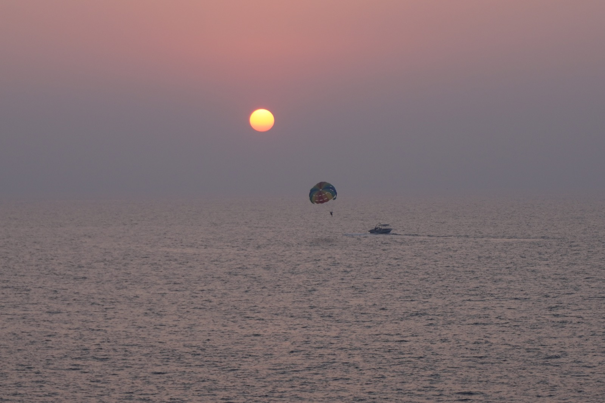

01and so it begins…The gang
gets together.
It started the night before: Palak and I flew from Delhi via Mumbai, Kanishtha arrived by train, and Arpit’s cancelled flight turned into a two-layover adventure. By the time we picked him up, the trip was officially on.
There was a sunrise drive, a sneaky teeth-brushing mission at breakfast, oily puri, bad tea, a missing Aadhaar card and a very necessary dosa lunch. Our surprisingly lovely resort gave us just enough time for ukulele, singing and a dip in the pool.
Accidentally matching in blue and white, we chased the sunset at Fort Aguada, took a million pictures, devoured burgers and ended the night with games. An early bedtime, naturally: around 3–4 AM.